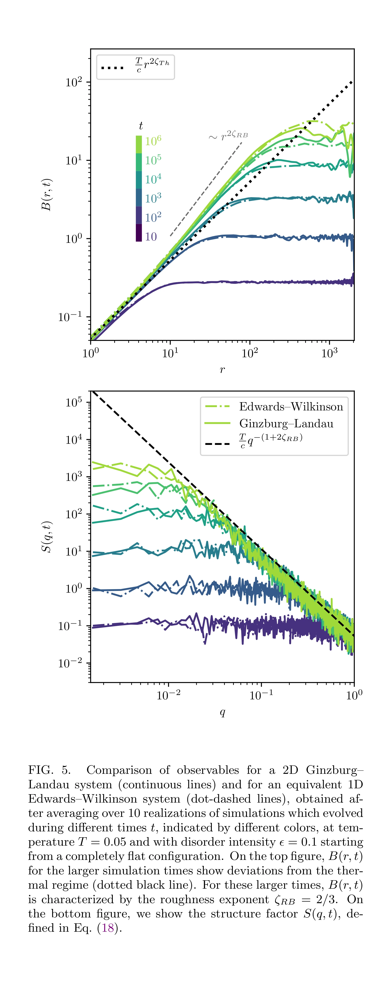
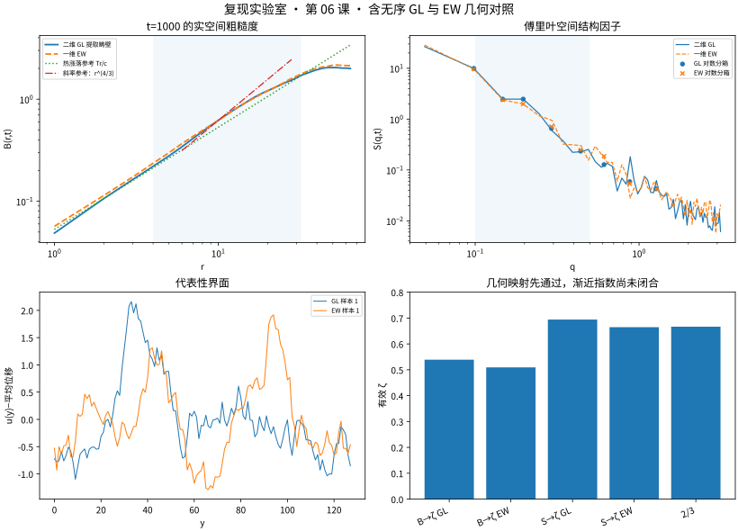

模型降维已经对上，不代表 \(\zeta=2/3\) 已经有资格宣布
Caballero 2020 Fig.5 是这篇论文最接近你后续第二篇工作的一张图：同一个 random-bond（随机键）问题，同时跑二维 Ginzburg–Landau（GL）体场和映射后的一维 Edwards–Wilkinson（EW）界面，再用实空间 roughness（粗糙度） B(r,t) 与傅里叶空间 structure factor（结构因子） S(q,t) 检查两种描述是否一致。更重要的是，这一课第一次把“模型映射是否正确”和“是否已经进入渐近普适区”严格拆成两个不同问题。
0 · 原论文 Fig.5 与我们的 t=1000 阶段验证

2D GL 用实线，等效 1D EW 用点划线；T=0.05、ε=0.1、从平直畴壁出发，平均 10 个独立无序样本。上图 B(r,t)，下图 S(q,t)。作者把长时间区间与随机键粗糙度 ζRB=2/3 比较。

T=0.05、ε=0.1、t=1000；GL 64×128，EW 长度 128，8 个独立无序样本。左上比较 B，右上比较 S；右下故意把 B 与 S 各自给出的有效 ζ 放到一起，防止只挑一个最像 2/3 的估计量。
1 · 论文真正测试的是两层命题
命题 A · 模型降维
给定同一体场无序物理，2D GL 提取出的畴壁和映射后的 1D EW 是否产生相同几何统计？这主要由 B(r) 与 S(q) 的跨模型一致性检验。
命题 B · 渐近标度
系统是否已经进入足够大的尺度/足够长的时间，使粗糙指数接近随机键平衡值 ζ=2/3？这需要估计量一致性与尺寸/时间收敛。
2 · 我们保持哪些论文物理设定？缩小了哪些东西？
| 项目 | Caballero Fig.5 | 本课阶段验证 |
|---|---|---|
| 体场耦合 | Vζ(φ)=V(φ)[1+εζ] | 相同 |
| T / ε | 0.05 / 0.1 | 0.05 / 0.1，相同 |
| 初始条件 | 平直界面 | 相同 |
| GL 畴壁估计量 | 有限温孤子拟合 | 第 04 课已验证的 {A,w,u} 拟合 |
| GL 尺寸 | 256×4096 | 64×128 |
| EW 长度 | 4096 | 128 |
| 独立无序样本 | 10 | 8 |
| 时间范围 | 多时间，延伸到很长时标 | 先看 t=1000 阶段验证 |
所以这节不是与 Fig.5 完全同协议的复现，而是一个严格的小系统阶段验证：先问 GL→EW 映射有没有走对，再决定是否值得把算力投给长时间/大尺寸下的指数闭合。
3 · 2D GL 与 1D EW 现在共享同一条无序传递链
二维体场继续使用第 05 课的随机键耦合：
1D EW 不再随便造一个“看起来有点相关”的随机力，而是使用第 05 课已经验证的畴壁层钉扎统计：
4 · 第一关：B(r) 的跨模型几何对照
在预先声明的 4≤r≤32 窗口中，我们用对称相对差比较 GL 与 EW，而不是拿其中一个当“真值”。自动化测试保存的最终结果：
这已经是非常强的跨模型一致性。它说明在这个阶段验证上，体场 GL 与降维后的 EW 对实空间畴壁几何的描述是相容的。
5 · 第二关：S(q) 必须独立跟上
傅里叶空间对小尺度/大尺度过渡的权重和 B(r) 不同，因此它不是“重复画一遍 B”。我们先对 q 做预定义对数分箱，只用分箱中心比较两模型，避免高 q 密集模式机械支配误差：
仍在事先设定的 10% 判据内，所以跨模型映射在傅里叶观测量上也通过。
6 · 然后才看指数：这里故意不“挑漂亮答案”
| 估计量 | 2D GL | 1D EW | 论文渐近参考 |
|---|---|---|---|
| 由 B(r) 得到 ζ | 0.538906 | 0.509213 | ζRB=2/3≈0.6667 |
| 由 S(q) 得到 ζ | 0.694308 | 0.664796 |
如果只看 S(q)，你很容易说“EW=0.665，几乎就是 2/3，复现成功”。但同一时刻 B(r) 仍只有约 0.51–0.54。这说明当前系统仍有明显的跨尺度过渡、有限尺寸和有限时间效应，不能把一个估计量的接近当作渐近普适性。
7 · 为什么这个“没通过”反而很有教学价值？
排除代码基础错误
B 和 S 的 GL↔EW 一致性已经很好，说明两套模型的几何分析流程不是各跑各的。
暴露跨尺度过渡
同一模型的 B 与 S 给出不同的有效 ζ，直接告诉你目前拟合区间不处在单一渐近区间。
决定算力投向
下一步应优先对计算更省的 EW 做时间/尺寸阶梯，确认指数收敛后再决定是否值得把 2D GL 也扩大。
8 · 另一个合理性检查：体场畴壁剖面还健康吗？
如果无序已把畴壁撕成气泡或多值几何，即使 B 与 S 看起来还能算，单值界面映射也可能失去物理意义。本课的有限温孤子拟合给出：
| 平均拟合振幅 A | 0.982981 |
|---|---|
| 平均拟合宽度 w | 1.371256 |
| 平均剖面拟合 RMSE | 0.077925 |
A 与 w 仍接近干净低温剖面（A≈1、w≈√2），因此当前阶段验证还在一个可合理约化成单值界面的区间。以后无序更强时，这一层拓扑/剖面质量检查必须先于 ζ 拟合。
9 · 完整脚本与机器生成的基准测试回执
打开第 06 课 Python 脚本 → 打开自动化测试保存的基准测试日志 →
Caballero Fig.5 geometry checkpoint T, epsilon, t = 0.050, 0.100, 1000.0 GL size / EW length = 64x128 / 128 realizations = 8 B median rel, r=4..32 = 1.227% S log-bin median rel = 6.122% zeta_B GL / EW = 0.538906 / 0.509213 zeta_S GL / EW = 0.694308 / 0.664796 GL fitted A, w = 0.982981, 1.371256 GL profile-fit RMSE = 0.077925 CROSS-MODEL GEOMETRY PASS; ASYMPTOTIC ZETA GATE NOT PASSED
10 · 第一篇工作的方法链在这里收口；下一步切到第二篇工作的 depinning（退钉扎）
这里的渐近 ζ 判据仍然没有通过，所以不把第 06 课写成“普适性已证明”。继续增加时间/尺寸阶梯仍然是未来粗糙度精修的一条支线；但按两篇论文的科学分工，正式主线现在进入第二篇工作：预先存在的孤立畴壁、恒定驱动、样本依赖的退钉扎阈值。